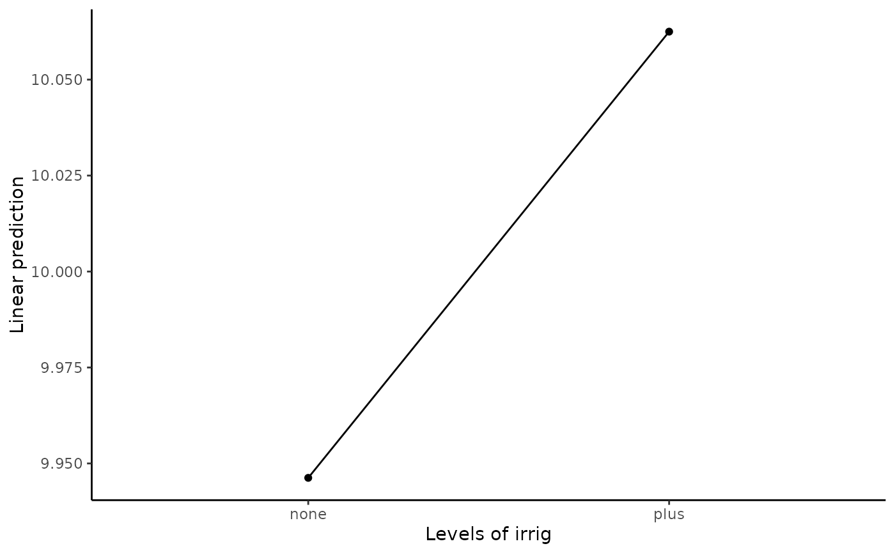

Exam4.4 presents the height means for 4 seedlots under factorial arrangement for two levels of Fertilizer and two levels of Irrigation.
Williams, E.R., Matheson, A.C. and Harwood, C.E. (2002).Experimental Design and Analysis for Tree Improvement. CSIRO Publishing.
data(DataExam4.4) library(tidyverse) library(ggplot2) library(dae) fm4.6 <- aov( formula = Height~Rep+Irrig*Ferti*SeedDLot+Error(Rep/Irrig:Ferti) , data = DataExam4.4 #, subset #, weights #, na.action , method = "qr" , model = TRUE , x = FALSE , y = FALSE , qr = TRUE , singular.ok = TRUE , contrasts = NULL )#> Warning: Error() model is singularsummary(fm4.6)#> #> Error: Rep #> Df Sum Sq Mean Sq #> Rep 1 0.7564 0.7564 #> #> Error: Rep:Irrig:Ferti #> Df Sum Sq Mean Sq F value Pr(>F) #> Irrig 1 0.1 0.1 0.154 0.721 #> Ferti 1 590.6 590.6 841.110 9e-05 *** #> Irrig:Ferti 1 0.0 0.0 0.010 0.926 #> Residuals 3 2.1 0.7 #> --- #> Signif. codes: 0 ‘***’ 0.001 ‘**’ 0.01 ‘*’ 0.05 ‘.’ 0.1 ‘ ’ 1 #> #> Error: Within #> Df Sum Sq Mean Sq F value Pr(>F) #> SeedDLot 3 39.65 13.218 19.680 6.3e-05 *** #> Irrig:SeedDLot 3 1.11 0.370 0.551 0.6572 #> Ferti:SeedDLot 3 9.95 3.317 4.938 0.0185 * #> Irrig:Ferti:SeedDLot 3 1.74 0.579 0.862 0.4874 #> Residuals 12 8.06 0.672 #> --- #> Signif. codes: 0 ‘***’ 0.001 ‘**’ 0.01 ‘*’ 0.05 ‘.’ 0.1 ‘ ’ 1#>#> # A tibble: 2 x 2 #> Irrig Mean #> <fct> <dbl> #> 1 none 9.95 #> 2 plus 10.1#>#> # A tibble: 2 x 2 #> Ferti Mean #> <fct> <dbl> #> 1 none 5.71 #> 2 plus 14.3#>#> # A tibble: 4 x 2 #> SeedDLot Mean #> <fct> <dbl> #> 1 Bulahdelah 10.2 #> 2 Coffs Harbour seed orchard 11.4 #> 3 Pomona Plantation 10.1 #> 4 Atherton 8.29#>#> # A tibble: 4 x 3 #> # Groups: Irrig [2] #> Irrig Ferti Mean #> <fct> <fct> <dbl> #> 1 none none 5.64 #> 2 none plus 14.3 #> 3 plus none 5.78 #> 4 plus plus 14.3#>#> # A tibble: 8 x 3 #> # Groups: Irrig [2] #> Irrig SeedDLot Mean #> <fct> <fct> <dbl> #> 1 none Bulahdelah 10.1 #> 2 none Coffs Harbour seed orchard 11.6 #> 3 none Pomona Plantation 10.1 #> 4 none Atherton 8.02 #> 5 plus Bulahdelah 10.3 #> 6 plus Coffs Harbour seed orchard 11.2 #> 7 plus Pomona Plantation 10.2 #> 8 plus Atherton 8.55#>#> # A tibble: 8 x 3 #> # Groups: Ferti [2] #> Ferti SeedDLot Mean #> <fct> <fct> <dbl> #> 1 none Bulahdelah 5.69 #> 2 none Coffs Harbour seed orchard 6.79 #> 3 none Pomona Plantation 5.41 #> 4 none Atherton 4.94 #> 5 plus Bulahdelah 14.7 #> 6 plus Coffs Harbour seed orchard 16.0 #> 7 plus Pomona Plantation 14.9 #> 8 plus Atherton 11.6#>#> # A tibble: 16 x 4 #> # Groups: Irrig, Ferti [4] #> Irrig Ferti SeedDLot Mean #> <fct> <fct> <fct> <dbl> #> 1 none none Bulahdelah 5.28 #> 2 none none Coffs Harbour seed orchard 7.12 #> 3 none none Pomona Plantation 5.62 #> 4 none none Atherton 4.52 #> 5 none plus Bulahdelah 14.8 #> 6 none plus Coffs Harbour seed orchard 16.2 #> 7 none plus Pomona Plantation 14.5 #> 8 none plus Atherton 11.5 #> 9 plus none Bulahdelah 6.1 #> 10 plus none Coffs Harbour seed orchard 6.46 #> 11 plus none Pomona Plantation 5.20 #> 12 plus none Atherton 5.38 #> 13 plus plus Bulahdelah 14.5 #> 14 plus plus Coffs Harbour seed orchard 15.9 #> 15 plus plus Pomona Plantation 15.3 #> 16 plus plus Atherton 11.7RESFIT <- data.frame(residualvalue=residuals(fm4.6),fittedvalue=fitted.values(fm4.6)) ggplot(RESFIT,aes(x=fittedvalue,y=residualvalue))+ geom_point(size=2)+ labs(x="Residual vs Fitted Values",y="")+ theme_bw()